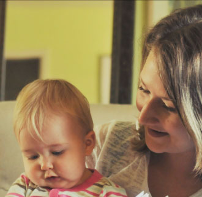
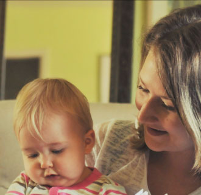
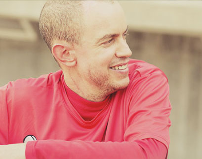
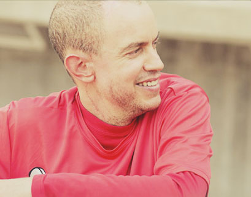

After 15 years, it’s our time.
Our time to rise above. Our time to renew, remake and reenergize. So let’s take a moment to remind ourselves that we bring the most needed support at the most heightened moment to those affected by cancer—from day one. Above all else, THEY are our priority. We fight with them to rise above the odds, the expectations and the disease. We all rise above. Together.
As one of our cancer warriors stated, “I feel like I’m the number one priority to the Foundation. I’m above all other things to them. There are so many layers to this journey, and they help me rise to the top… Where I can breathe.”
Fourth, we worked closely with our many programmatic and cause marketing partners to strengthen our financial future, innovate expansions of our efforts and deliver first-rate services for those in need.
Our accomplishments would not be possible without the steadfast commitment of our Chairman Jeff Garvey, our Board of Directors and our millions of dedicated supporters. Our success has always been derived from people from all walks of life that meet a cancer diagnosis with hope and more than a little grit. We are inspired by you to dream bigger and reach further.
Although some things have changed, one thing remains absolutely true: this Foundation doesn’t back down from a challenge. Make no mistake that we will forge ahead boldly in 2013 to continue making a difference in the lives of people affected by cancer.

LIVESTRONG,
Doug Ulman — President & CEO
 

Sarah and her husband were ready. Ready to start a family, ready to get back to normal life beyond cancer. Then, the second diagnosis came in. Breast cancer. Again. The news was devastating and the options were few.
At 31, Sarah chose to have her ovaries removed, her best chance to survive. She thought it meant her dream of being a parent was over. She was fighting for her own life now. But when her oncologist mentioned the possibility of in vitro fertilization and connected Sarah to the LIVESTRONG Foundation, everything changed.
Sarah and her husband worked with one of our navigators to help pay for the medications and services for freezing embryos. And when her sister-in-law stepped forward to be a surrogate, their dreams came true. Lilly Dee was born nine months later.
Sarah sums it up, "The LIVESTRONG Foundation made what we thought was impossible... possible."


Cancer happens to a person, not a number. Each person has her journey, his experience, her feelings, his attitude. That’s why we provide free Cancer Navigation Services to help those affected by cancer decide how to face their journey. Cancer is not in control and we help survivors understand that. From the physical to the emotional to the practical, we help with:


We saw an 11% increase in new client intake over 2011

We supported more than 15,000 people affected by cancer in person, on the phone or online

We saved clients nearly $6,000,000 in health care expenses
 

Brian Rose didn’t mince words, and neither will we... Brian Rose was an inspiration.
A baseball coach, a husband, a friend, but more than anything, a man on a mission to spread the word about cancer education and awareness. When Brian was diagnosed with Stage 4 Melanoma, he found help through the LIVESTRONG Foundation, and we found a hero. Working with our navigation services, Brian received support with insurance, fertility and especially clinical trials. In turn, Brian became an outspoken advocate for not only the Foundation’s work, but for all those affected by cancer, championing his “Fight Like Hell” mantra.
In January of 2013, the world lost Brian Rose, but it did not lose his unforgettable spirit and inspiration. Thank you, Brian. We miss you.

The power of a grassroots movement that truly harnesses the passion of its advocates should never be underestimated. And when it comes to passionate advocates worldwide, 2012 was a banner year for the LIVESTRONG Foundation.
This tremendous generosity allows us to provide all of our free services and resources, like the LIVESTRONG Guidebook, cancer navigation services and LIVESTRONG at School, among many others. Since our inception, we have raised over $500 million dollars for the fight against cancer, and 82% of those funds have gone directly to support our programs and services for survivors.

In 2012, we added more than 830,000 new grassroots supporters to the movement; advocates who assist in heightening awareness and engage in public policy matters impacting the cancer community.
Activism like that not only inspires more advocates, but it fuels donations. We are often humbled by the impressive number of individual donors who give and the support we receive from a community unity around our mission.
In 2012, we raised $48 million to support programs that serve people affected by cancer through more than $23.4 million in contributions from more than 116,000 donors worldwide.
This tremendous generosity allows us to provide resources like the LIVESTRONG Guidebook,LIVESTRONG SurvivorCare and LIVESTRONG at School, among many other programs and services. Since our inception, we have raised over $500 million dollars for the fight against cancer, and 82% of those funds have gone directly to support our programs and services for survivors.

In 2012, 84 cents of every dollar raised went directly to programmatic funding.
The figures on these pages depict the financial activities of the LIVESTRONG Foundation for the 2012 calendar year. Complete copies of the audited financial statements are available upon request from the Lance Armstrong Foundation, 2201 East 6th Street, Austin, TX 78702, or on our website at LIVESTRONG.org.


Since the Community Impact Project began, more than 250 programs have been launched in 47 states and over $4.5 million has been distributed.
After significant efforts, focused in four Mexican cities, using television that reached over 104 million people, social media that reached over 850 thousand monthly, training nearly 250 people, radio that reached 93 million, and holding special events including one on World Cancer Day which gathered more than 7 thousand people in Mexico City’s Zócalo, the results were astounding:
In 2012, we added more than 830,000 new grassroots supporters to the movement; advocates who assist in heightening awareness and engage in public policy matters impacting the cancer community.
Activism like that not only inspires more advocates, but it fuels donations. We are often humbled by the impressive number of individual donors who give and the support we receive from a community unity around our mission.
In 2012, we raised $48 million to support programs that serve people affected by cancer through more than $23.4 million in contributions from more than 116,000 donors worldwide.
This tremendous generosity allows us to provide resources like the LIVESTRONG Guidebook,LIVESTRONG SurvivorCare and LIVESTRONG at School, among many other programs and services. Since our inception, we have raised over $500 million dollars for the fight against cancer, and 82% of those funds have gone directly to support our programs and services for survivors.
In 2012, 84 cents of every dollar raised went directly to programmatic funding.